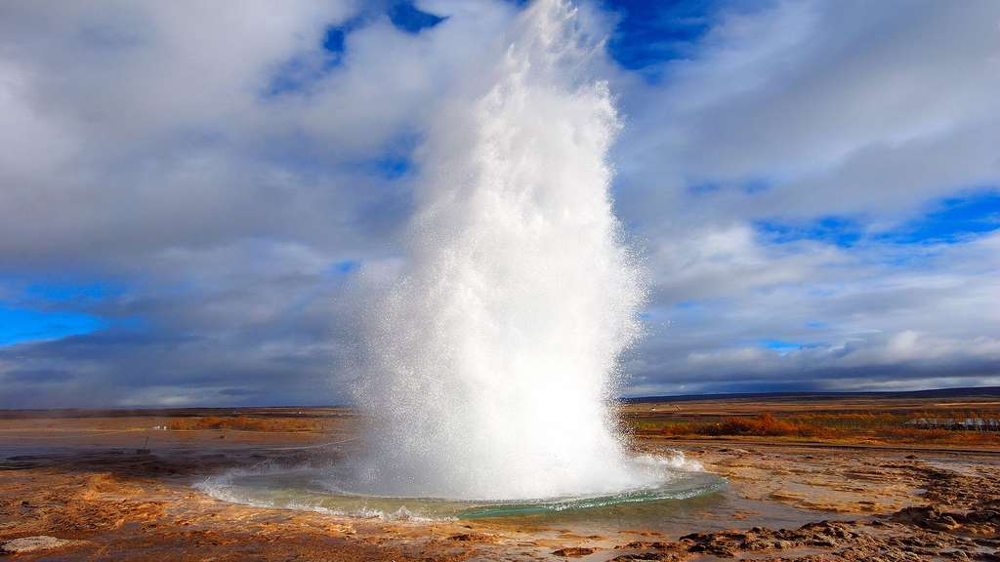
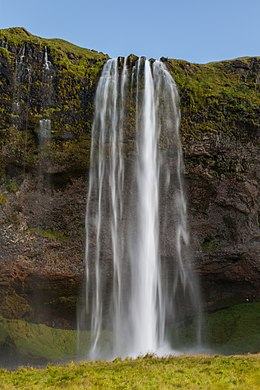

Islande / Iceland / Ísland
🌐 Continent
Europe👥 Population
+350k hab.🏰 Capitale
Reykjavik🎉 Fête nationale
17 juin
Bienvenue en Islande !
Velkomin til Íslands!
Cette petite île se trouve tout au nord-ouest de l'Europe, à quelques centaines
de kilomètres seulement du Groenland.
Malgré sa taille, elle n'a rien à envier aux autres pays du continent : paysages tout
droit sortis de contes de fées, volcans impressionnants, mais surtout un spectacle
d'aurores boréales à couper le souffle !
Salut, tu veux voir les volcans ? 🌋
Hæ, viltu sjá eldstöðvarnar? 🌋
Bien sûr ! J'apporte de quoi manger.
Jú! Ég kem með eitthvað að borða.
En effet, en dépit de sa taille, l'Islande possède environ 130 volcans actifs ! Vous pourrez également avoir la chance de voir le célèbre Geysir, un geyser connu pour avoir donné son nom à tous les autres.
L'éruption la plus connue est sans doute celle de l'Eyjafjöll en 2010. En effet, le nuage de cendres volcanique qui en a résulté à temporairement fait interdir tout trafic aérien au Royaume-Uni, en Belgique, en Norvège et au Danemark ! En tout, le préjudice financier subi par les compagnies aériennes a été estimé à plus de 1,7 milliards de dollars !
C'était cool ! On va visiter Seljalandsfoss après ça ?
Það var flott! Ætlum við að heimsækja Seljalandsfoss eftir það?
Seljaland-quoi ?! 🤔
Seljaland-hvað?! 🤔
A toute première vue, Seljalandsfoss semble être une cascade plutôt banale. Sans compter sa taille (environ 60 mètres), on ne voit pas ce qu'il y a de si exceptionnel...
... jusqu'à ce que l'on décide de jeter un oeil du côté de la grotte qu'elle cache, et là !
C'était super beau 😍, on se fait un restau pour finir la soirée ?
Það var ofboðslega gott 😍, ætlum við á veitingastað til að enda kvöldið?
Avec plaisir ! On mange quoi ? 🍴
Með ánægju ! Hvað erum við að borða? 🍴
L'Islande possède une des gastronomies les plus saines du monde. En même temps, ça se comprends : l'eau est claire, les poissons sont sauvages et le bétail y vit très bien.
C'est pour cette raison que nous vous recommandons fortement de goûter aux plats suivant, testés et approuvés !
| Nom | Définition | Ce qu'on en a pensé |
|---|---|---|
| Harðfiskur | Tranches de poisson séchées et salées | Parfait pour un apéro |
| Rúgbrauð | Pain noir | Etonamment bon ! |
| Rôti d'agneau | Un gigot d'agneau cuit à feu doux | Délicieux mais copieux |
| Skyr | Yaourt islandais, souvent accompagné de fruits rouges | Le dessert idéal ! |
| Snúður | Pâtisserie à la cannelle | Une friandise d'exception, à essayer absolument ! |
Conclusion :
L'Islande est l'un des pays les plus beaux qu'il m'ait été donné de visiter. La nature y prends une place très importante et le climat frais et humide vivifie les sens. Nous y avons pris grand plaisir et renviendrons dès que possible !